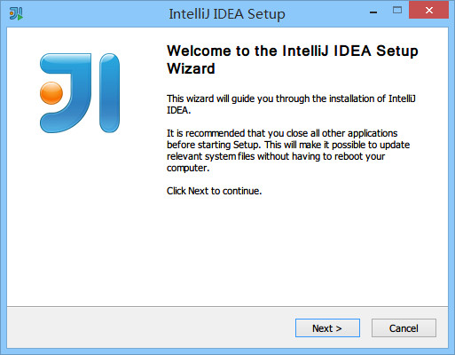
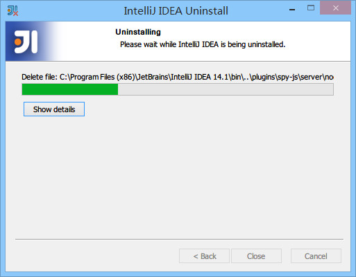
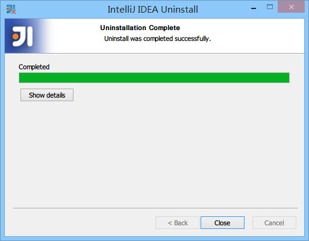

Windows 系统下安装 IntelliJ IDEA
更新记录
- 2016-12：IntelliJ IDEA 2016.3 版本出来之后，Windows 的安装过程增加了一个可以勾选选用 JetBrains 自己开发的一个 JRE 环境，这个建议 64 位系统的用户可以勾选上，按正常理论效果比 Oracle 应该会好。
系统要求
- 系统支持：Microsoft Windows 8 / 7 / Vista / 2003 / XP（每个系统版本的 32 位和 64 位都可以）
- JDK 版本：Oracle JDK 1.6 或以上
- 内存：最低要求 1 GB，推荐 2 GB 以上
- 硬盘：最低要求 2 GB
- 显示器：最低要求 1024 X 768 分辨率
- 更多信息可以阅读：https://www.jetbrains.com/idea/download/system_requirements.jsp?os=win
首次安装
- IntelliJ IDEA 的安装是非常简单的，不需要做过多的选择，可以说简单到都是
Next即可。



- 上图标记 1 表示在桌面上创建一个快捷图标，建议勾选上，方便我们在安装后定位 IntelliJ IDEA 安装目录。
- 上图标记 2 表示关联 Java 和 Groovy 文件，建议都不要勾选，正常我们会在 Windows 的文件系统上打开这类文件都是为了快速查阅文件里面的内容，如果用 IntelliJ IDEA 关联上之后，由于 IntelliJ IDEA 打开速度缓慢，这并不能方便我们查看。
- 建议在 Windows 系统上关联此类文件可以用 EmEditor、Notepad++ 这类轻便的编辑器。


- 整个安装过程，一般的配置电脑安装所需的时间大约是 1 ~ 5 分钟。
已有旧版本安装新版本

- 上图，显示我目前电脑中已经有一个 IntelliJ IDEA 版本，如果我勾选了标记 1，则表示安装之前会先卸载掉电脑上的旧版本。
- 上图标记 2，如果勾选了，则 IntelliJ IDEA 会直接安静地卸载旧版本，而旧版本的个性化设置不会被删除。
- 在小版本迭代中建议是卸载掉旧版本的，然后再进行新版本安装，因为小版本迭代一般都是 Bug 的修复，保留旧版本没有多大意义。
- 在大版本迭代中建议是保留旧版本，也就是不勾选上图标注 1，IntelliJ IDEA 是支持一台电脑装多个版本的。
- 接下来的步骤我们假设勾选了标注 1 再进行安装。

- 上图，由于上一步勾选了卸载旧版本选项，所以出现了选择删除旧版本的配置选项。
- 第一个选项：删除旧版本的缓存和本地历史记录。
- 第二个选项：删除旧版本的个人个性化设置。
- 建议两个都不要勾选。
- 点击 uninstall，进入全自动的卸载过程，卸载完成接下来的步骤跟上文“首次安装”一致，这里不再进行说明。
卸载
- 卸载过程在第 3 点已经有涉及到了，专门对 IntelliJ IDEA 进行卸载也是一样的流程。


